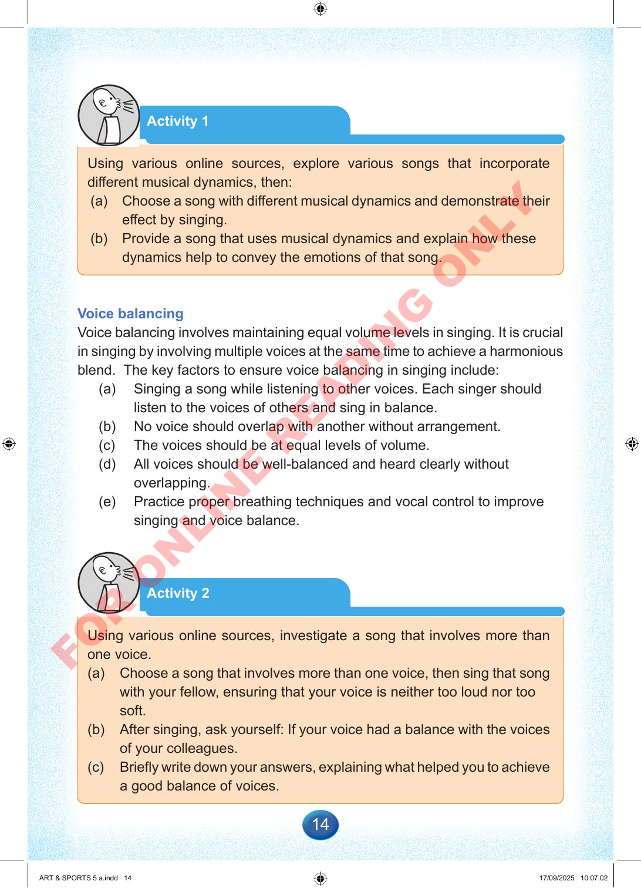

14
Activity
1
Using
various
online
sources,
explore
various
songs
that
incorporate
different
musical
dynamics,
then:
(a)
Choose
a
song
with
different
musical
dynamics
and
demonstrate
their
effect
by
singing.
(b)
Provide
a
song
that
uses
musical
dynamics
and
explain
how
these
dynamics
help
to
convey
the
emotions
of
that
song.
Voice
balancing
Voice
balancing
involves
maintaining
equal
volume
levels
in
singing.
It
is
crucial
in
singing
by
involving
multiple
voices
at
the
same
time
to
achieve
a
harmonious
blend.
The
key
factors
to
ensure
voice
balancing
in
singing
include:
(a)
Singing
a
song
while
listening
to
other
voices.
Each
singer
should
listen
to
the
voices
of
others
and
sing
in
balance.
(b)
No
voice
should
overlap
with
another
without
arrangement.
(c)
The
voices
should
be
at
equal
levels
of
volume.
(d)
All
voices
should
be
well-balanced
and
heard
clearly
without
overlapping.
(e)
Practice
proper
breathing
techniques
and
vocal
control
to
improve
singing
and
voice
balance.
Activity
2
Using
various
online
sources,
investigate
a
song
that
involves
more
than
one
voice.
(a)
Choose
a
song
that
involves
more
than
one
voice,
then
sing
that
song
with
your
fellow,
ensuring
that
your
voice
is
neither
too
loud
nor
too
soft.
(b)
After
singing,
ask
yourself:
If
your
voice
had
a
balance
with
the
voices
of
your
colleagues.
(c)
Briefly
write
down
your
answers,
explaining
what
helped
you
to
achieve
a
good
balance
of
voices.
ART
&
SPORTS
5
a.indd
14
ART
&
SPORTS
5
a.indd
14
17/09/2025
10:07:02
17/09/2025
10:07:02
F
O
R
O
N
L
I
N
E
R
E
A
D
I
N
G
O
N
L
Y